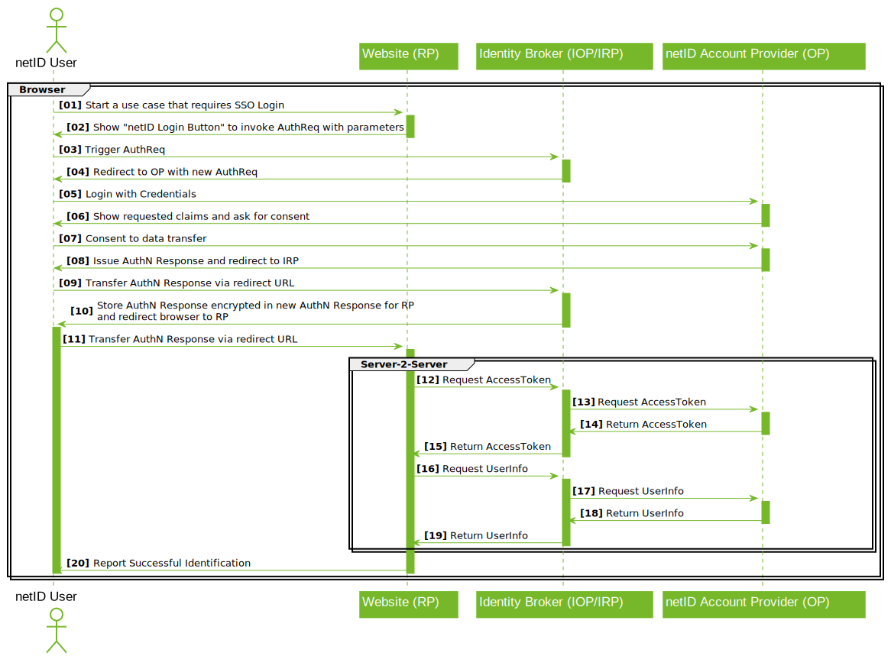

Single Sign-on Documentation¶
This documentation describes the federated Single Sign-on "netID", which allows digital services (netID Partners) to register and login netID Users based on their account at so called netID Account Providers. In order to acquire the necessary credentials to leverage this service please refer to the Developer Portal Documentation
Integration Guide¶
General Overview¶
The netID Single Sign-on implements the OpenID Connect standard as per the OpenID Connect Core 1.0 specification using the Authorization Code Flow.
Partners manage their details as well as service/clients settings in the netID Developer Portal. They can register/manage services and associated clients for these services (Website, App, Mobile, ...). Data transfer authorizations are managed service/client specific.
All the clients' communication takes place via EnID's central SSO broker. The SSO broker routes requests to the participating Account Providers, end users always authenticate to the Account Provider that manages their specific account, which is also where they authorize data transfer to a partners' service.
Clients specify during authentication calls which master data they request to be authorized by a user for transfer; if the user agrees, the client receives an id_token and a userinfo object as a JSON structure. id_token and userinfo objects also contain the end user's subject identifier (sub).
netID uses Pairwise Subject Identifiers to derive client specific subject identifiers during authentication requests. The subject identifier is derived from a unique technical parameter of the service, ensuring that the sub value is the same for all clients of that service.
Claims and Scopes¶
Each time a partner initiates a login flow by calling the authorization endpoint he can define which master data the user should authorize to be transferred. For that purpose, the OpenID Connect/OAuth2 standard defines scope and claim mechanisms.
Every OpenID Connect request must always request the openid scope. Moreover, the master data required/asked for by the partner can be expressed in the form of scopes or claims (voluntary or essential) with netID.
In addition to Single Sign-on netID allows users to manage their overall privacy settings in terms of commercial data use, which are managed via the netID Permission Center backend. The netID Broker may be used by eligible netID Partners to acquire an access token that allows access to the Permission Center on behalf of a user, details on this integration can be found here.
Once the user authorizes the transfer of that master data (requested using claims), this authorization is stored and not being asked for again unless the users revokes the authorization using the netID Privacy Center.
The following scopes are supported by netID:
| Scope | Description |
|---|---|
| openid | mandatory scope to initiate a Single Sign-on using the authorize endpoint |
| permission_management | optional scope to request an access token to access the netID Permission Center |
The following claims are supported by netID:
| Claim | Type | Description | Example |
|---|---|---|---|
| sub | String | Subject - Identifier for the end user at the issuer (netID Account Provider) | "tLTGOmOHb5ix7i9d-hJ4CHXdh_hM2ZsCR2Iy7v7hs1M" |
| address | JSON Object | Physical mailing address, containing information (if available) about postal code (ZIP), city or town, steet address and country where the end user's address is located | If available:
|
| birthdate | String | The end user's date of birth "yyyy-mm-dd" | "1980-01-01" |
| String | The end user's email address | "jane.doe@example.org" | |
| email_verified | Boolean | The verification status of the end user's email address | true | false |
| gender | String | The end user's salutation | "female" | "male" | "divers" | "other" |
| given_name | String | The end user's first name (or names) | "Jane" |
| family_name | String | The end user's last name | "Doe" |
| shipping_address | JSON Object | Shipping address, containing information (if available) about recipient name, steet address, postal code (ZIP), city or town and country | If available:
|
Claims can also be requested using the following scopes.
| Scope | Request type | Description |
|---|---|---|
| profile | OPTIONAL | This scope value requests access to the following claims: family_name, given_name, gender and birthdate. |
| OPTIONAL | This scope value requests access to the email and email_verified claims. | |
| address | OPTIONAL | This scope value requests access to the address claim. |
Important: please note!
The availability of these claims may, however, vary depending on the end user's account provider; in such cases un-supported claims are ignored and the client needs to handle this accordingly. Scopes and voluntary (optional) claims can be deselected by the user. When using optional claims, the system must be able to handle cases where not all claims are approved (e.g. email address). Otherwise, the claims should be requested as essential.
Client Types¶
netID offers support for clients that authenticate users via service endpoints (web servers, IAM systems,...), as well as clients that implement all authentication logic in one place and run without an additional backend (e.g. native mobile apps, single page applications).
It must be ensured that the correct 'application type' is selected for each client:
-
Application type 'Native / Mobile App (PKCE)': Native mobile app clients or single page applications that fully authenticate the user within the app via authorization code flow. The use of PKCE is mandatory. The authorization callback to a redirect_uri is handled by the application itself, a client secret is not used. Learn more about PKCE: https://oauth.net/2/pkce/
-
Application type 'Website':
In the case of web clients or apps with an external "web authentication endpoint", the use of PKCE is optional but also recommended, as its ability to prevent the injection of authorization codes makes it useful for any type of OpenID Connect/OAuth2 client, even if the application is running on a web server and is using a client secret. The authorization callback to a redirect_uri is handled by the respective service endpoint.
The setup of the client incl. (custom) URI schemes is described in the client setup guide.
Example Endpoint Calls¶
Authorize¶
Requests to the authorize endpoint initiate the Single Sign-on process, clients identify themselves with their client_id and redirect_uri and specify which claims and scopes are to be requested. Some optional parameters are also supported.
The netID Broker endpoint for authorize requests is https://broker.netid.de/authorize. All endpoints and supported OpenID Connect features are also available here: https://broker.netid.de/.well-known/openid-configuration
Sample Calls are provided given both easy readable as well as in valid URL encoding. The encoding needs to be used for the redirect_uri as well:
SSO without requesting any additional data¶
https://broker.netid.de/authorize?
response_type=code&
client_id=[clientID]&
redirect_uri=[redirect_uri]&
scope=openid
https://broker.netid.de/authorize?response_type=code&client_id=[clientID]&redirect_uri=[redirect_uri]&scope=openid
Profile scope expressed in essential and optional claims¶
https://broker.netid.de/authorize?
response_type=code&
client_id=[clientID]&
redirect_uri=[redirect_uri]&
scope=openid&
claims={
"userinfo":{
"given_name":{"essential":true},
"family_name":{"essential":true},
"birthdate": null,
"gender": null
}
}
https://broker.netid.de/authorize?response_type=code&client_id=[clientID]&redirect_uri=[redirect_uri]&scope=openid&claims=%7B%22userinfo%22%3A%7B%22birthdate%22%3A%7B%22essential%22%3Atrue%7D%2C%22gender%22%3A%7B%22essential%22%3Atrue%7D%2C%22given_name%22%3A%7B%22essential%22%3Atrue%7D%2C%22family_name%22%3A%7B%22essential%22%3Atrue%7D%7D%7D
Token Endpoint¶
Token requests are carried out after the callback to the client in order to exchange the code (only valid for 30 seconds and to be used only once) provided for an access token (valid for 15 minutes) for the UserInfo Endpoint as well as the id token. It is absolutely necessary that the code used remains unmodified.
With token requests, it's particularly important to ensure that the code provided is identical bit-by-bit to the one received in the callback to the redirect_uri.
The netID endpoint for token requests is https://broker.netid.de/token. Clients are authenticated using
client_id
REQUIRED. The client identifier issued to the client during
the registration process in the netID Developer Portal.
client_secret
REQUIRED. The client secret issued to the client during
the registration process in the netID Developer Portal.
The endpoint supports two authentication methods, namely client_secret_basic (basic authentication) and client_secret_post (credentials in the request body). When using basic authentication the endpoint supports both GET and POST based requests.
POST https://broker.netid.de/token HTTP/1.1
Content-Type: application/x-www-form-urlencoded
Authorization: Basic *base64(client_id:client_secret)*
code=[code]&redirect_uri=[redirect_uri]&grant_type=authorization_code
Example request using curl:
curl -v -u [user:pass] -X POST https://broker.netid.de/token -H 'content-type: application/x-www-form-urlencoded; charset=UTF-8' -d 'code=[code]&redirect_uri=[redirect_uri]&grant_type=authorization_code'
{
"access_token":"f3EcGc1l8mjw3gZ3....",
"id_token":"eyJhbGciOiJub25lIn0....",
"token_type":"Bearer",
"expires_in":899
}
{
"aud": "f6316771-.....",
"sub": "geuGIhNTX.....",
"auth_time": 1603726351,
"iss": "https://broker.netid.de/",
"exp": 1603727273,
"iat": 1603726373
}
As an alternative clients may use client_secret_post based authentication providing client_id and client_secret using a POST request as shown below:
POST /token HTTP/1.1
Host: broker.netid.de
Content-Type: application/x-www-form-urlencoded
code=[code]&redirect_uri=[redirect_uri]&grant_type=authorization_code&client_id=CLIENT_ID_GOES_HERE&client_secret=CLIENT_SECRET_GOES_HERE
UserInfo Endpoint¶
The access token is used to retrieve the requested claims from the UserInfo Endpoint. Claims are returned as a JSON object.
The netID Broker endpoint for userinfo requests is https://broker.netid.de/userinfo.
GET /userinfo HTTP/1.1
Host: broker.netid.de
Authorization: Bearer SlAV32hkKG
POST /userinfo HTTP/1.1
Host: broker.netid.de
Content-Type: application/x-www-form-urlencoded
access_token=mF_9.B5f-4.1JqM
HTTP/1.1 200 OK
Content-Type: application/json
{
"sub": "tLTGOmOHb5ix7i9.....",
"birthdate": "1980-01-01",
"email_verified": true,
"address": {
"street_address": "Hauptstr. 10",
"country": "DE",
"formatted": "Hauptstr. 10\n10117 Berlin\nDeutschland",
"locality": "Berlin",
"postal_code": "10117"
},
"gender": "female",
"shipping_address": {
"street_address": "Teststr. 12\nAppartement 47/11",
"country": "DE",
"formatted": "John Doe\nTeststr. 12\nAppartement 47/11\n10117 Berlin\nDeutschland",
"locality": "Berlin",
"recipient": "John Doe",
"postal_code": "10117"
},
"given_name": "Jane",
"family_name": "Doe",
"email": "jane.doe@example.org"
}
Additional information about UserInfo: OIDC specification
Implementation Details¶
Optional Parameters¶
The following request parameters are supported for initiating the SSO process and may be passed to the authorize endpoint. For details please refer to the OIDC specification.
| Parameter | Description |
|---|---|
| prompt | login for requiring re-authentication of a user during the login process consent for requiring consent to be given again |
| max_age | in cases where time of authentication may not be too far in the past - elapsed time in seconds since the last time the End-User was actively authenticated |
| login_hint | to provide and email address in order to prevent the broker's user interface from being visible to the user and thus directly redirect to the relevant account provider |
| state | The value of this parameter is passed through the entire flow transparently and included when calling back to the redirect_uri. It may be used to recognize how authorize request and asynchronous response are associated in the client |
| nonce | If a nonce value was sent in the Authentication Request, a nonce Claim MUST be present and its value checked to verify that it is the same value as the one that was sent in the Authentication Request. The Client SHOULD check the nonce value for replay attacks. The precise method for detecting replay attacks is Client specific. |
Detailed Call Sequence¶
The sequence of the calls is summarized as follows:

Detailed description of the sequence diagram
- The end user initiates a process on the client's site that involves the use of netID.
- At this point, the client generates a netID button for an authorize request and redirects the end user to the SSO broker.
- The SSO broker validates the client's authorize request.
- The SSO broker generates a new authorize request and redirects the user to the OpenID provider. For their part, the broker appears to the OpenID provider as a relying party client.
- The OpenID provider validates the SSO broker's authorize request and displays the login screen to the end user; the user logs in with the account provider.
- The OpenID provider shows an approval page to the end user on which all the data he or she is asked to allow transfer of is displayed.
- The end user agrees to provide the requested data.
- The OpenID provider generates an AuthN Response and redirects to the SSO broker.
- The SSO broker receives the AuthN Response from the OpenID provider.
- The SSO broker generates a new AuthN Response and redirects to the client's redirect_uri.
- The client receives the SSO broker's AuthN Response.
- The actual data query is initiated.
- The client requests the access token with the SSO broker using the Auth Code (from the AuthN Response) and the Client Credentials.
- The SSO broker requests the access token from the OP using the Auth Code (from the AuthN Response) and the Client Credentials taken from the client.
- The OpenID provider issues an access token, giving it to the SSO broker.
- The SSO broker uses the access token to generate a new access token, giving this one to the client.
- The client uses the access token with the SSO broker to request the userinfo object.
- The SSO broker uses the access token to request the userinfo object from the OpenID provider.
- The OpenID provider grants the userinfo object to the SSO broker.
- The SSO broker grants the userinfo object to the client.
- The client has now received the userinfo object.
Error Messages¶
If the authorize request fails, the respective error is provided with the callback to the redirect_uri. For details please refer to the OIDC specification.
netID Button¶
The depiction of the netID button is explained in the styleguide.
Best Practices¶
It is largely up to the relying parties to decide where netID is to be incorporated in clients.
Typical cases involve the use of netID as a login or data enrichment mechanism.
As a login mechanism, for example, netID may be used like other SSO mechanisms (as well as alongside them) as an authentication alternative, or even used as the sole login method. Whether or not a local account is to be held in addition to the netID account is entirely up to the relying party. netID does not provide a classic session, but the SSO process is available via the authorize process at all times. An email address provided to the broker via a browser will be stored as a 1st-party cookie; the end user may decide whether to remain logged in with the account provider. The end user's approval for the transfer of master data will be sought only upon the first request for such data, unless the user revokes his or her approval; ideally, this allows SSO flows to be able to run even with interaction from the user.
If a relying party would like to also be able to handle authentication of end users independently of netID, it is advisable to ensure that mechanisms for merging or separating accounts are provided for. If local account representations with local credentials exist alongside netID, there should also be support processes for handling them; netID support processes only come into effect in connection with netID accounts themselves.
In terms of data enrichment, examples may include using netID during registration processes to make it easier for users to enter information, or as a source for addresses when customers are checking out with their shopping carts online. Whether the data provided is to be used only temporarily or whether it should persist is again left up to the relying parties to freely decide. Each time netID is triggered, the data obtained is up to date in relation to the information currently available to the account provider. With regard to local copies, it may be reasonable to repeatedly request updates and synchronize them. The relying party is to take the principles of data protection into account as they pertain to local data retention.
Ideally, data enrichment processes should be initiated in those places where the data is actually needed. This helps to optimize conversion rates while achieving a high degree of data minimization.
One thing to be aware of is the verification status of email addresses: if an email address has already been verified with netID, a new request from the relying party to verify the email address is, generally speaking, unnecessary and may cause confusion on the part of the end user. Those netID accounts associated with account providers that are, for their part, email providers, are verified from the outset. If such an email account is deleted, not only does the end user lose the ability to use netID, but all support processes based on that email address will come to nothing.
Security Information¶
- All communication with netID must be secured by TLS. This also applies to all URLs entered in the developer portal.
- netID supports PKCE as extension to the Authorization Code flow. The usage of PKCE for native mobile apps and single page applications is mandatory.
- netID exclusively supports the Authorization Code Flow, so that id_token is only transferred in TLS-secured back-end to back-end communication.